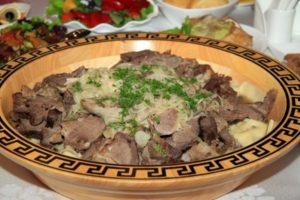
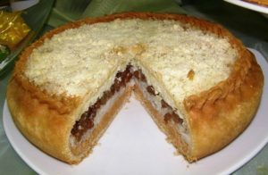
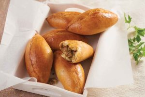
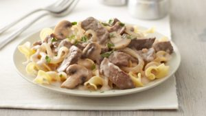

1 Echpochmak
It is a very simple pastry at first glance: Yeast dough, meat, onion, cubed potatoes, pyramid-shaped and baked in the oven. But the secret is in the details. It is very tricky to get the dough just right so that the triangles have a crunchy crust despite the juicy stuffing inside.

2 Tartare
The secret to a good number of other simple yet delicious national dishes, including those from Tatarstan, is essentially the same: a minimum of spices and simple preparation methods will have you licking your fingers. This is where Tatars really have just cause for pride; the cattle, which are reared in the Volga region, give their meat a special taste.
3 Beshbarmak
Beshbarmak is boiled meat. Usually chopped with a knife. Often mixed with boiled noodles and seasoned with onion sauce. These foods are usually served in large round bowls. Beshbarmak is a national dish of Kyrgyzstan. However, this food is very popular in Russia. This dish is made from horse meat, and sometimes lamb or beef.

4Chak-chak
Chak-chak: This food include one of the halal foods in Russia. Chak-chak is made from a mixture of flour and water without yeast. This dough is rolled into a ball the size of a pecan fruit. Then fried with lots of oil. Although at first glance looks like macaroni, but apparently chak-chak is made from meringue.
5 Gubaidiya

6"Blini
Blini are the pride of the Slavic kitchen. Real Russian blini are the diameter of a saucer, never cocktail-sized. They are best fried in a well-seasoned cast iron skillet.

7"Shashlik
This dish is a form of Shish kebab. Shashlik is grilled meat and fish on skewers that you should try..
8 Pirozhki
Everyday Russian Food Rotating Header Image Pirozhki (buns) stuffed with meat Feb 10th, 2013 by sputniktomorrow. pirozhki (1) Pirozhki are a favorite Russian (and Eastern European) dish, often sold as fast food, but made at home as well. The stuffing can vary; meat, veggies, hard-boiled eggs, potatoes, cabbage, and fruit are common. A particular variant of pirozhki dough is made without yeast and fried in a pan (much quicker), but this version (my Aunt’s recipe) is my favorite and definitely worth the extra time. The dough can be frozen for use later. We ended up with extra dough and made some additional pirozhki with veggies and cheese and mixed berries with chocolate.
9 Stroganoff
While it is fully accepted that this dish is always made with thin slices of tender beef, like tenderloin or top loin, and onions, there is debate as to whether mushrooms are traditional.

10 Borsch
This is one of my all time favorite comfort soups! It’s a traditional Russian Borsch (Borscht to some), it’s made with beef, lots of veggies and beets. Delicious!1